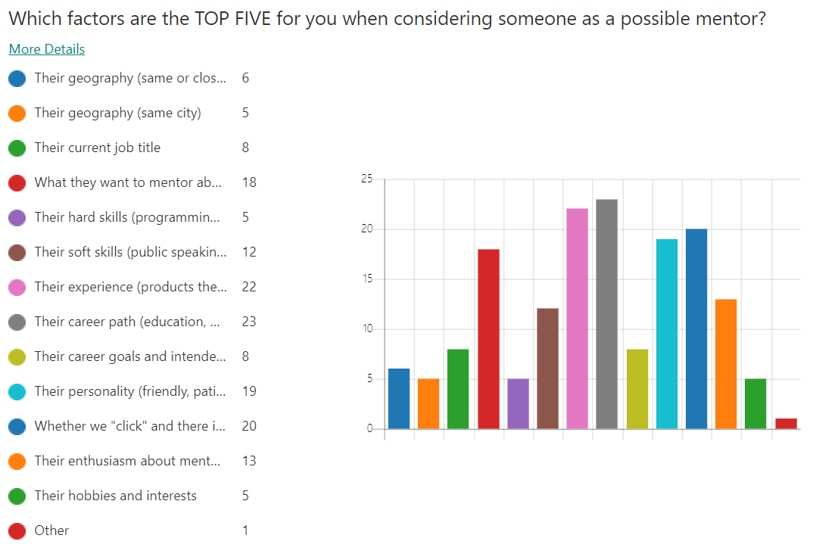

Mentor
For Microsoft Employees
Summary
The Microsoft Mentor program was struggling to help new users find mentors. I ran usability tests and quantiative surveys; analyzed the data, and created 10 actionable tasks to improve our search and database interface. Four of my 10 recommendations were implemented during the 2020 Hackathon.
Background
The goal of Mentor is to help Microsoft employees find mentors. Stakeholders include mentee candidates, mentor candidates, software engineers, and PMs. I determined that the essential tasks for users were the ability to:
- Input/edit personal data
- Search, select, and request mentorship
- Accept or reject a mentorship role
- Find information about becoming a better mentor/mentee
Research: surveys
I ran a survey to identify what factors recent college grads at Microsoft considered when searching for new mentors. I found that 72% of participants were most interested in finding a career mentor and 89% of partcipants were most interested in a traditional mentor.
There was less of a consensus when asked to report what factors were the top five for them when picking a mentor: 79% said the mentor's career path, 72% said the mentor's experience, 65% said whether they "clicked" with the mentor, 62% said the mentor's personality, 49% said the mentor's enthusiasm for mentoring. Except for the category "other", which only received one vote, the remaining eight categories all recieved five or more votes.
Research: usability testing
I ran six 30-minute usability studies where I asked users:
- Summarize previous mentoring experience; outline ideal mentoring experience
- What they would look for in a mentor; to search for a mentor
- To select a mentor; how they would like to select a mentor
- To update their profile; what data they wanted to see about possible mentors or mentees
- To accept a mentoring request from me; what factors they would consider before accepting a request
- What they would like to see on the website; where it would be and how it would work
After gathering the data, I analyzed it and made a 30 minute presentation to my fellow hackers. I began by showing a four minute clip of a user trying 14 different queries and getting no results each time. The user got so frustrated with the search interface that he angrily declared "If you weren't here watching me, I would have left the site by now. I'm not getting any search results, and now I feel like mentor is not for me!"
After presenting my key findings, I drew up four short term solutions that could be implemented that day to improve the learnability and decrease the risk fatal of errors. I then began drafting long-term solutions that could improve the learnability and satisfaction.
Acomplishments
Three of the four changes I recommended for immediate implemention have been completed; I will be running further usability testing before we implement the new email notification templates. I've joined the year round team that works on this tool so that I can help as we discuss solutions that are beyond the scope of a three day hackathon.